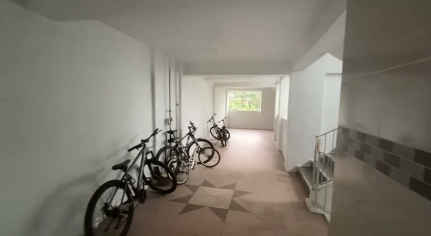

Inside the lift
Lift doors ahead
At the startFloor plan
Flat entranceView this unit
A plant
Floor plan
Take another look
There may be more to notice.
Walk all the way back, then retrace your steps. Familiar spots may reveal new details over time.